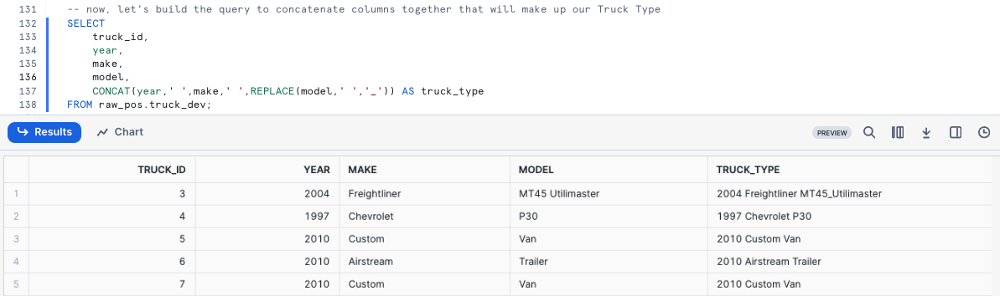

Overview
Welcome to the Powered by Tasty Bytes - Zero to Snowflake Quickstart focused on Transformation!
Within this Quickstart we will walk through a large set of Snowflake functionality covering key features like Zero Copy Cloning and Time-Travel to deliver on a Tasty Bytes business requirement.
Prerequisites
- Before beginning, please make sure you have completed the Introduction to Tasty Bytes Quickstart which provides a walkthrough on setting up a trial account and deploying the Tasty Bytes Foundation required to complete this Quickstart.
What You Will Learn
- How to Clone a Table
- How to Use Snowflake's Result Set Cache
- How to Add a Column to a Table
- How to Update Data in a Column
- How to Use Time-Travel
- How to Swap, Drop and Undrop a Table
What You Will Build
- An Understanding of Important Snowflake Transformation Functionality
- A Development Table Clone of a Production Table
- A New Column in a Table Complete with Calculated Food Truck Ages in Years
Overview
Within this Quickstart we will follow a Tasty Bytes themed story via a Snowsight SQL Worksheet with this page serving as a side by side guide complete with additional commentary, images and documentation links.
This section will walk you through logging into Snowflake, Creating a New Worksheet, Renaming the Worksheet, Copying SQL from GitHub, and Pasting the SQL we will be leveraging within this Quickstart.
Step 1 - Accessing Snowflake via URL
- Open a browser window and enter the URL of your Snowflake Account
Step 2 - Logging into Snowflake
- Log into your Snowflake account.
Step 3 - Navigating to Worksheets
- Click on the Projects Tab in the left-hand navigation bar and click Worksheets.
Step 4 - Creating a Worksheet
- Within Worksheets, click the "+" button in the top-right corner of Snowsight.
Step 5 - Renaming a Worksheet
- Rename the Worksheet by clicking on the auto-generated Timestamp name and inputting "Tasty Bytes - Transformation"
Step 6 - Accessing Quickstart SQL in GitHub
- Click the button below which will direct you to our Tasty Bytes SQL file that is hosted on GitHub.
tb_zts_transformation
Step 7 - Copying Setup SQL from GitHub
- Within GitHub navigate to the right side and click "Copy raw contents". This will copy all of the required SQL into your clipboard.

Step 8 - Pasting Setup SQL from GitHub into your Snowflake Worksheet
- Path back to Snowsight and your newly created Worksheet and Paste (CMD + V for Mac or CTRL + V for Windows) what we just copied from GitHub.
Step 9 - Click Next –>
Overview
As part of Tasty Bytes Fleet Analysis, our Developer has been tasked with creating and updating a new Truck Type column within the Raw layer Truck table that combines the Year, Make and Model together.
Within this step, we will first walk through standing up a Development environment using Snowflake Zero Copy Cloning for this development to be completed and tested within before rolling into production.
Step 1 - Create a Clone of Production
Thanks to Snowflake's unique architecture, we can instantly create a snapshot of our production raw_pos.truck using CLONE functionality and name it raw_pos.truck_dev.
Let's now run our next set our queries to set our tb_dev Role and tb_101 Warehouse context and create the table clone; noting here that we do not need to set Warehouse context since cloning does not require one. This query will provide a Table TRUCK_DEV successfully created result.
USE ROLE tb_dev;
USE DATABASE tb_101;
CREATE OR REPLACE TABLE raw_pos.truck_dev CLONE raw_pos.truck;
Step 2 - Click Next –>
Overview
With our Zero Copy Clone instantly available we can now begin to develop against it without any fear of impacting production. However, before we make any changes let's first run some simple queries against it and test out Snowflake's Result Set Cache.
Step 1 - Querying our Cloned Table
Now that we are going to query our Table, we will need to use our tb_dev_wh Warehouse.
Let's kick off the next two queries with the second statement producing an result set consisting of our trucks, their years, make and models while making sure we ORDER BY our truck_id Column.
USE WAREHOUSE tb_dev_wh;
SELECT
t.truck_id,
t.year,
t.make,
t.model
FROM raw_pos.truck_dev t
ORDER BY t.truck_id;

Step 2 - Using Persisted Query Results
To test Snowflake's Result Set Cache, the next query we run will be identical to what we just ran.
However, we can now take things a step further and access the Query Profile showcasing this query returned results instantly as the the results came from our Result Set Cache.
SELECT
t.truck_id,
t.year,
t.make,
t.model, --> Snowflake supports Trailing Comma's in SELECT clauses
FROM raw_pos.truck_dev t
ORDER BY t.truck_id;

Step 3 - Click Next –>
Overview
Within this step, we will now will Add and Update a Truck Type column to the Development Truck Table we created previously while also addressing the typo in the Make field.
Step 1 - Updating Incorrect Values in a Column
To begin this section, let's make sure we correct the typo by executing our next query which leverages UPDATE to change rows in our truck_dev WHERE the make is equal to Ford_.
This query will provide a Number of Rows updated result set.
UPDATE raw_pos.truck_dev
SET make = 'Ford' WHERE make = 'Ford_';
Step 2 - Constructing our Truck Type Column
With the typo handled, we can now build the query to concatenate columns together that will make up our Truck Type. Please execute the next query where we will see CONCAT and REPLACE leveraged.
SELECT
truck_id,
year,
make,
model,
CONCAT(year,' ',make,' ',REPLACE(model,' ','_')) AS truck_type
FROM raw_pos.truck_dev;

Step 3 - Adding a Column
To start, please execute the next query which uses ALTER TABLE... ADD COLUMN to create an empty truck_type column of Data Type VARCHAR to our truck_dev table.
This query will provide a Statement executed successfully result.
ALTER TABLE raw_pos.truck_dev
ADD COLUMN truck_type VARCHAR(100);
Step 4 - Updating our Column
With the column in place, we can kick off the next query which will UPDATE the new, empty truck_type column using the Truck Type concatenation we built in the previous section.
This query will provide a Number of Rows Updated result set.
UPDATE raw_pos.truck_dev
SET truck_type = CONCAT(year,make,' ',REPLACE(model,' ','_'));
Step 5 - Querying our new Column
After successfully updating the data, let's now run a quick query against the table to see how things look in our truck_type column.
SELECT
truck_id,
year,
truck_type
FROM raw_pos.truck_dev
ORDER BY truck_id;

Uh oh! Thank goodness we were smart developers and didn't do this sort of thing blindly in production.
It looks like we messed up the truck_type concatenation. We will need to resolve this in our next section.
Step 6 - Click Next –>
Overview
Althoug we made a mistake on the Update statement earlier and missed adding a space between Year and Make. Thankfully, we can use Time Travel to revert our table back to the state it was after we fixed the misspelling so we can correct our work.
Step 1 - Leveraging Query History
To start our recovery process, kick off the next query which will use the Snowflake QUERY_HISTORY function to retrieve a list of all update statements we have made against our truck_dev Table.
SELECT
query_id,
query_text,
user_name,
query_type,
start_time
FROM TABLE(information_schema.query_history())
WHERE 1=1
AND query_type = 'UPDATE'
AND query_text LIKE '%raw_pos.truck_dev%'
ORDER BY start_time DESC;

Step 2 - Setting a SQL Variable
As expected, we see our typo correction as well as our update and their associated unique query_id's. Please run the next query which creates a query_id SQL Variable that we will use to revert our changes via Time-Travel in the next step.
After execution you will recieve a Statement executed successfully result.
SET query_id =
(
SELECT TOP 1
query_id
FROM TABLE(information_schema.query_history())
WHERE 1=1
AND query_type = 'UPDATE'
AND query_text LIKE '%SET truck_type =%'
ORDER BY start_time DESC
);
Step 3 - Leveraging Time-Travel to Revert our Table
With our bad query_id stored as a Variable, we can execute the next query which will replace our truck_dev Table with what it looked like BEFORE the incorrect query_id statement using Time-Travel.
SELECT
truck_id,
make,
truck_type
FROM raw_pos.truck_dev
BEFORE(STATEMENT => $query_id)
ORDER BY truck_id;

Please refer to the list below for the other Time-Travel Statement options available.
Happy with our results, let's now execute the next query to recreate the table. This query will provide a Table TRUCK_DEV successfully created. result.
CREATE OR REPLACE TABLE raw_pos.truck_dev
AS
SELECT * FROM raw_pos.truck_dev
BEFORE(STATEMENT => $query_id); -- revert to before a specified Query ID ran
To conclude, let's run the correct update statement which will provide a Number of Rows Updated result set.
UPDATE raw_pos.truck_dev t
SET truck_type = CONCAT(t.year,' ',t.make,' ',REPLACE(t.model,' ','_'));
Step 4 - Click Next –>
Overview
Based on our previous efforts, we have addressed the requirements we were given and to complete our task need to push our Development into Production.
Step 1 - Table Swap
Within this step, we will swap our Development Truck table truck_dev with what is currently available in Production.
Please kick off the next two queries where we first assume the more privileged accountadmin role. As a accountadmin the second query utilizes ALTER TABLE... SWAP WITH to promote our truck_dev table to truck and vice versa.
Once complete you will recieve a Statement executed successfully. result.
USE ROLE accountadmin;
ALTER TABLE raw_pos.truck_dev
SWAP WITH raw_pos.truck;
Step 2 - Validate Production
To confirm our process was successful, let's now take a look at the Production truck table so we can validate the swap was successful and the truck_type results are valid.
SELECT
t.truck_id,
t.truck_type
FROM raw_pos.truck t
WHERE t.make = 'Ford';

Step 3 - Dropping and Undropping Tables
We can officially say our developer has completed their assigned task. With the truck_type column in place and correctly calculated, our sysadmin can clean up the left over Table and sign off for the day.
Step 4 - Dropping a Table
To remove the Table from our Database, please execute the next query which leverages DROP TABLE. This query will provide a TRUCK successfully dropped. result.
DROP TABLE raw_pos.truck;
Uh oh!! That result set shows that even our accountadmin can make mistakes. We incorrectly dropped production truck and not development truck_dev! Thankfully, Snowflake's Time-Travel can come to the rescue again.
Step 5 - Undropping a Table
Hurry up and run the next query before any systems are impacted which will UNDROP the truck table. This query will provide a Table TRUCK successfully restored. result.
UNDROP TABLE raw_pos.truck;
Step 6 - Dropping the Correct Table
Alright, now let's officially close things out by running the final query to correctly drop truck_dev. This query will provide a TRUC_DEV successfully dropped. result.
DROP TABLE raw_pos.truck_dev;
Step 7 - Click Next –>
Conclusion
Fantastic work! You have successfully completed the Tasty Bytes - Zero to Snowflake - Transformation Quickstart.
By doing so you have now:
- Cloned a Table
- Used Snowflake's Result Set Cache
- Added a Column to a Table
- Updated Data in a Column
- Leveraged Time-Travel for Data Disaster Recovery
- Swapped, Dropped and Undropped a Table
If you would like to re-run this Quickstart please leverage the Reset scripts in the bottom of your associated Worksheet.
Next Steps
To continue your journey in the Snowflake AI Data Cloud, please now visit the link below to see all other Powered by Tasty Bytes - Quickstarts available to you.